area = 1
area = π/2 = 1.570+
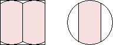
area = (3√3 + 2π)/8 = 1.434+
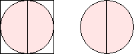
area = π/2 = 1.570+

area = 1.596+ (MM)
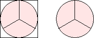
area = π/2 = 1.570+
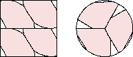
area = 1.618+ (MM)
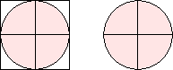
area = π/2 = 1.570+
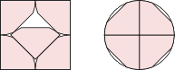
area = 1.664+ (JD)
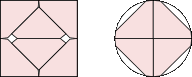
area = 1.637+ (JD)
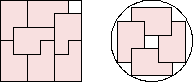
area = 55/36 = 1.527+ (MM)
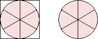
area = π/2 = 1.570+
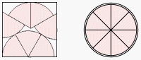
area = 1.549+ (HH)
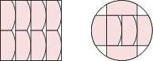
area = 1.598+ (JD)
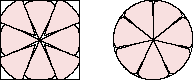
area = 1.650+ (BZ)
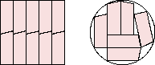
area = 8/5 = 1.6 (BZ)